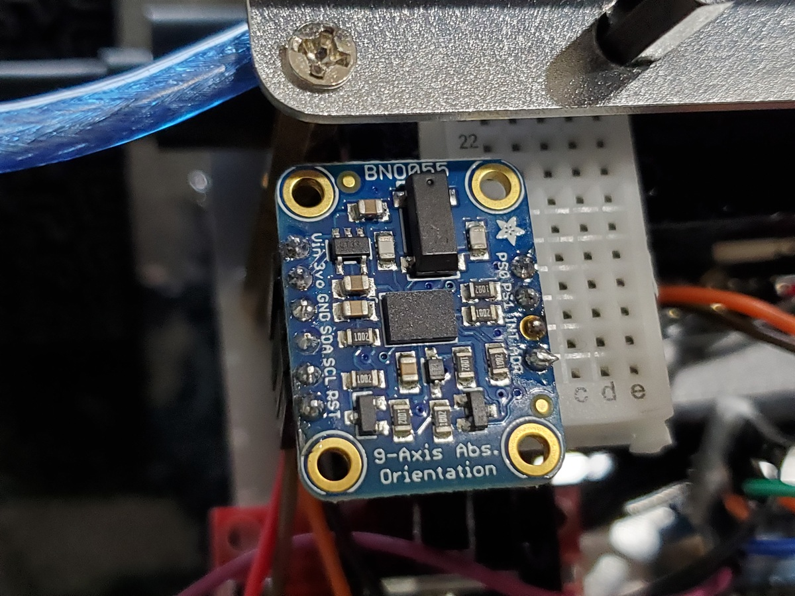
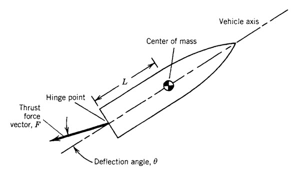

Mastering Thrust Vector Control
Thrust Vector Control (TVC) is crucial for modern rocketry, allowing for precise control over a rocket's flight path by altering the direction of thrust. But we start with something simpler, understanding the basics before diving into complex control systems.
Here at SpaceBox, we guide you through the essentials of rocketry engineering, from fundamental principles to advanced TVC mechanisms. Learn how to steer your model rockets with precision and expertise.
Rocketry Fundamentals
Explore the foundational principles of rocketry and control systems.
Step 1: Basics of Rocket Propulsion
Rocket propulsion involves:
- Liquid Propulsion - Uses liquid fuel and oxidizer; provides high control over thrust through variable flow rates.
- Solid Motors - Pre-packed fuel and oxidizer in a solid form; simple, reliable but less controllable once ignited.
- Hybrid Motors - Combines solid fuel with a liquid or gaseous oxidizer, offering a balance between control and simplicity.
Step 2: Sensors/Information
The rocket knows where it is by knowing where it isn't. By precisely measuring its current position through sensors like gyroscopes, accelerometers, and GPS, the system can calculate where it needs to go to reach its target or maintain its course.
Step 3: Control Systems
Control systems in rocketry include:
- PID Control - Proportional-Integral-Derivative control for maintaining stability by correcting errors in position or attitude.
- State Space Control - An advanced method using state variables for complex system dynamics.
- Model Predictive Control (MPC) - Predicts future states of the system to optimize control actions over time.
Step 4: Understanding Thrust Vector Control
TVC involves directing the exhaust of the rocket engine to control its flight. Common methods include gimballed nozzles, jet vanes, and vernier thrusters. Each method has its advantages in terms of precision, weight, and cost.
Advanced Thrust Vector Techniques
While basic TVC gives you control, advanced techniques offer precision for complex maneuvers. Learn about differential throttling, multiple engine vectoring, and dynamic control algorithms.
SpaceBox introduces you to the next level of rocketry with insights into how these technologies have shaped space travel, from satellite launches to interplanetary missions.
Join us to explore how these advanced control methods can be applied in your model rocket projects for enhanced performance and learning.